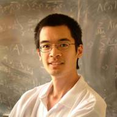
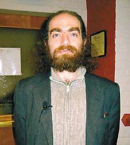

Persons(人物)
Terence Tao

中文名：陶哲轩。世界著名数学家，美籍华人，2006年获得数学界最高奖项：Fields 奖，因与英国数学家 Ben Green 合作证明了存在任意长度的素数等差数列
。现任教于UCLA。
Tao 的主要研究领域为实分析，调和分析，泛函分析，数论。并著有 Analysis, Introduction to measure theory 等著作。
Tao的个人主页(内部链接多被GFW屏蔽)
Grigori Perelman

Perelman, 2006年与Tao同时获得Fields奖，但是他拒绝接受该奖。获奖原因：在OA系统 Arxiv上发表3篇文章，解决了彭加莱猜想(Poincaré conjecture)。Perelman 拒绝接受Fields的原因是他在证明过程中使用了另一个美国数学家Hamilton提出的一个理论工具：Ricci flow(里奇流)。不管怎样，Perelman 无疑引起了数学界的轩然大波，无论是他的证明还是他的品德！他的主要研究领域是拓扑学，尤其是世界上数一数二的Ricci flow 专家。他是天才，更是圣人！很多人说Perelman 不如Tao, 我看未必。更何况他们完全是两种不同类型的人，不具有太大的可比性。如果真要比较的话，可以从国际奥数的成绩来看：Perelman 曾经在国际奥数上获得过满分（自然也就是第一名）！而Tao三次参加，最好的成绩也只有第16名(Well, almost)。Perelman目前住在莫斯科，和他母亲在一起，靠着他母亲的退休金生活，他本人目前没有工作。俄罗斯政府也不管这件事情。据我估计，目前40岁的他，应该还未成家，估计以后也不会了。Wikipedia主条目：Grigori Perelman。
Donald Knuth

中文名，高德纳。世界著名计算机科学家，算法巨著：The Art of Computer Programming (TAOCP)的作者。TAOCP共包含7卷，目前Knuth只完成了其中的4卷，且他目前已经从Standford University退休，为了集中全部精力来完成这一史诗般的算法巨著。Knuth也因该书获得了计算机科学领域的最高奖项:ACM Turing 奖，也是目前唯一仅通过写书就获得该奖的人。Knuth的中文名是美籍华人计算机科学家姚期智的夫人在Knuth第一次访华前所起的。姚期智本人也曾获得Turing 奖。在20世纪80年代初，TAOCP一书的铅字排版技术的印刷效果让Knuth感到失望。Knuth于是决定自己动手，设计一个计算机排版系统:TEX。从最初的构想，到最后的完整实现，一共花了Knuth 将近10年时间来开发和完善TEX。最终，Knuth对自己设计的排版系统所排版出来的TAOCP非常满意。此外，设计TEX的同时，Knuth还设计了很多计算机字体(Computer Modern), 以及用于造字的程序和语言：MetaFont。正如TAOCP的书名所指的那样，Knuth是一个将理论、技术和艺术融为一体的独一无二的巨匠。Knuth 在Standford 大学的个人主页
Leslie Lamport

Lamport 有感于Knuth所开发的排版系统TEX 对于非专业人员来说太难以掌握，于是Lamport着手在TEX基础之上设计一个比较容易学习的用户接口：LATEX 。实际上LATEX 并不是一个独立的排版系统，而是在TEX 的基础上写了一大堆的现成的代码(宏，Macro)来定义一些比较标准的用法格式(技术上称为format, 并以.fmt格式的文件存为内存映像，需要的时候直接导入内存)。Lamport 目前任职于微软研究院(Microsoft Research, MSR)。2014年4月，Lamport被ACM协会授予2013年度Turing奖，以表彰他在时钟等算法方面的贡献。Lamport 个人主页